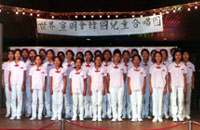

| systems |
| home page |
| . Pace Appendix B Illustrative Evaluation Questions How many disadvantaged, underrepresented students graduated from the University of California in year x. For those students who participated in University outreach programs, how many became eligible to attend the University. How many become eligible for more selective University campuses. What are initial achievement levels of students entering these outreach programs. |
|  |